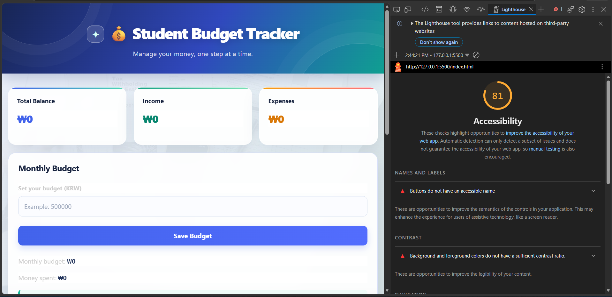
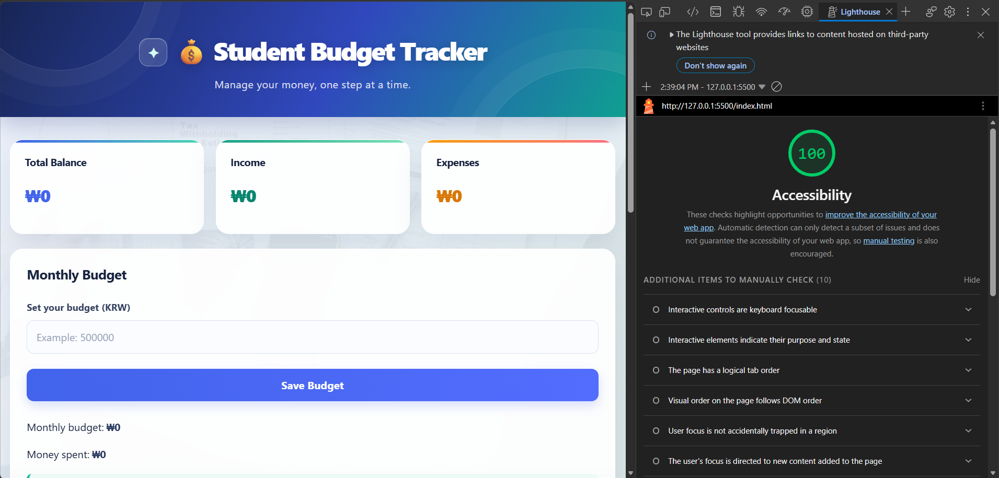
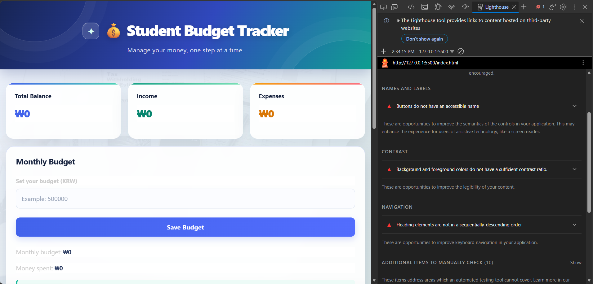

Student: Pandey Aayush · Student ID: 202537201
1. Introduction
This report reviews accessibility issues found in the Student Budget Tracker interface. The aim is to identify barriers, correct them, and compare the first and final Lighthouse accessibility audits.
The audit focuses on accessible names for buttons, text contrast, and correct heading order.
2. Lighthouse Score Comparison
These values are visible in the Lighthouse screenshots supplied with this task.
3. Initial Accessibility Problems
1. Buttons do not have an accessible name
The Save Budget button was flagged because the control did not expose an accessible name to assistive technology.
2. Insufficient color contrast
Some foreground and background color combinations were too similar, reducing readability.
3. Incorrect heading hierarchy
The heading elements were not in a sequentially descending order, which made page navigation less predictable.
4. Accessibility Improvements
Fix 1: Accessible Button Name
Give the Save Budget control meaningful text or an accessible name so its purpose is announced to screen-reader users.
Fix 2: Color Contrast
Replace very pale text with readable foreground colors and verify the contrast of text against its background.
Fix 3: Heading Hierarchy
Keep headings in a logical order and use the correct heading level for each section.
5. Before and After Screenshots
The screenshots below are the three Lighthouse captures supplied for this audit.
Initial Lighthouse Audit
Accessibility Score: 81/100

Final Lighthouse Audit
Accessibility Score: 100/100

Initial Lighthouse Audit — Additional View
Accessibility findings detail: 81/100

6. Code Improvements
Before
After
7. Conclusion
The first audit showed three important issues involving button names, contrast, and heading structure. After the improvements, the supplied Lighthouse capture shows the accessibility score increased from 81 to 100. The activity demonstrates why semantic HTML, readable colors, and clear page structure matter.